2 Modelado en Minería de datos
2.1 Explorando los datos
Existen dos aproximaciones para empezar a explorar la información existente en una base de datos:
- Resumen de los datos
- Visualización de los datos
2.1.1 Resumen de los datos
Dado el tamaño de las bases de datos resulta imposible o muy difícil conocer todas sus propiedad, el resumen de los datos intenta brindar propiedades claves de los datos, estas propiedades podrían ser:
- Cual es el valor más común
- Cuan variable o dispersa esta la información
- Existen valores extraños o inesperados en la base de datos
- Los datos siguen alguna distribución
A continuación se emplea la encuesta a hogares 2019 para ir respondiendo estas preguntas.
En cuanto a los valores mas comunes, la media y la mediana de los datos son suficientes para las variables cuantitativas, mientra que para variables cualitativas, las categorías mas frecuentes son una buena opción.
load(url("https://github.com/AlvaroLimber/EST-384/raw/master/data/eh19.RData"))
# media de edad
mean(eh19p$s02a_03)## [1] 29.69211## [1] 26## Registered S3 method overwritten by 'quantmod':
## method from
## as.zoo.data.frame zoo## [1] 26## [1] "2.Mujer"## [1] "La Paz"A veces es mejor ver los resultados por grupos, por ejemplo, podemos verlo por departamento y área.
eh19p %>% group_by(depto,area,p0) %>% summarise(media_edad=mean(s02a_03),mediana_edad=median(s02a_03),centralValue(s02a_02),n())## `summarise()` regrouping output by 'depto', 'area' (override with `.groups` argument)## # A tibble: 43 x 7
## # Groups: depto, area [18]
## depto area p0 media_edad mediana_edad `centralValue(s~ `n()`
## <fct> <fct> <fct> <dbl> <dbl> <chr> <int>
## 1 Chuqu~ Urba~ No p~ 32.5 28 2.Mujer 987
## 2 Chuqu~ Urba~ Pobre 24.6 20 2.Mujer 832
## 3 Chuqu~ Urba~ <NA> 14 14 2.Mujer 1
## 4 Chuqu~ Rural No p~ 35.6 35.5 1.Hombre 436
## 5 Chuqu~ Rural Pobre 32.0 26 2.Mujer 876
## 6 Chuqu~ Rural <NA> 51 51 2.Mujer 1
## 7 La Paz Urba~ No p~ 33.9 30.5 2.Mujer 5356
## 8 La Paz Urba~ Pobre 25.7 21 2.Mujer 3246
## 9 La Paz Urba~ <NA> 28.9 29.5 2.Mujer 14
## 10 La Paz Rural No p~ 35.1 30.5 1.Hombre 480
## # ... with 33 more rowsLa función n() realiza un proceso de conteo.
De forma similar podemos hacer para las medidas de variabilidad, las mas comunes la desviación estándar, el rango, el rango intercuartil y los cuantiles. Usando la eh19 para la edad y el ingreso laboral.
## [1] 21.05689## [1] 0 98## [1] 32## 0% 25% 50% 75% 100%
## 0 12 26 44 98## 10% 90%
## 5 61## [1] 2470.079## [1] 10.00 32916.67## [1] 2583.5## 0% 25% 50% 75% 100%
## 10.00 1416.50 2598.00 4000.00 32916.67## 10% 90%
## 649.2667 5984.3335## Urbana Rural
## Chuquisaca 2774.932 2088.921
## La Paz 2246.716 1848.078
## Cochabamba 2403.059 1684.063
## Oruro 2539.094 1970.399
## Potosí 2227.650 2880.285
## Tarija 2515.370 1893.959
## Santa Cruz 2702.120 2076.687
## Beni 2735.839 1639.508
## Pando 2661.182 2043.595## `summarise()` regrouping output by 'depto' (override with `.groups` argument)## # A tibble: 18 x 4
## # Groups: depto [9]
## depto area `sd(ylab, na.rm = T)` `n()`
## <fct> <fct> <dbl> <int>
## 1 Chuquisaca Urbana 2775. 1820
## 2 Chuquisaca Rural 2089. 1313
## 3 La Paz Urbana 2247. 8616
## 4 La Paz Rural 1848. 1097
## 5 Cochabamba Urbana 2403. 6251
## 6 Cochabamba Rural 1684. 1186
## 7 Oruro Urbana 2539. 1804
## 8 Oruro Rural 1970. 967
## 9 Potosí Urbana 2228. 1208
## 10 Potosí Rural 2880. 1159
## 11 Tarija Urbana 2515. 2313
## 12 Tarija Rural 1894. 844
## 13 Santa Cruz Urbana 2702. 6043
## 14 Santa Cruz Rural 2077. 838
## 15 Beni Urbana 2736. 1634
## 16 Beni Rural 1640. 609
## 17 Pando Urbana 2661. 1059
## 18 Pando Rural 2044. 844## `summarise()` regrouping output by 'depto', 'area' (override with `.groups` argument)## Urbana Rural
## Chuquisaca Numeric,5 Numeric,5
## La Paz Numeric,5 Numeric,5
## Cochabamba Numeric,5 Numeric,5
## Oruro Numeric,5 Numeric,5
## Potosí Numeric,5 Numeric,5
## Tarija Numeric,5 Numeric,5
## Santa Cruz Numeric,5 Numeric,5
## Beni Numeric,5 Numeric,5
## Pando Numeric,5 Numeric,5## depto area x.0% x.25% x.50%
## 1 Chuquisaca Urbana 83.33334 1206.58752 2355.00000
## 2 La Paz Urbana 10.00000 1739.75000 2793.92493
## 3 Cochabamba Urbana 96.66667 1796.00000 2800.00000
## 4 Oruro Urbana 25.00000 1515.50000 2811.76001
## 5 Potosí Urbana 66.66667 1500.00000 2598.00000
## 6 Tarija Urbana 41.66667 1732.00000 2736.56006
## 7 Santa Cruz Urbana 60.00000 2035.09998 3000.00000
## 8 Beni Urbana 151.55000 2036.87497 2734.00000
## 9 Pando Urbana 216.50000 2121.27496 3101.66663
## 10 Chuquisaca Rural 26.66667 333.33334 842.91672
## 11 La Paz Rural 20.00000 342.16667 1057.08337
## 12 Cochabamba Rural 11.66667 705.83337 1550.00000
## 13 Oruro Rural 33.33334 389.69998 1034.59998
## 14 Potosí Rural 25.00000 625.00000 993.75000
## 15 Tarija Rural 41.66667 722.79167 1630.63000
## 16 Santa Cruz Rural 45.00000 1213.70834 2381.50000
## 17 Beni Rural 133.33334 1500.00000 2416.13989
## 18 Pando Rural 150.00000 1500.00000 2592.75000
## x.75% x.100%
## 1 3597.50000 32916.66797
## 2 4156.79980 23916.66602
## 3 4141.66675 30000.00000
## 4 4330.00000 30000.00000
## 5 4000.00000 15900.00000
## 6 4333.33350 20000.00000
## 7 4409.60010 24500.00000
## 8 4185.83325 22389.00000
## 9 4568.69824 20000.00000
## 10 2079.63330 14750.00000
## 11 2549.61664 14433.43262
## 12 2705.00012 12549.16699
## 13 2537.50000 14283.33301
## 14 2691.66669 24216.66602
## 15 3031.00000 11150.58301
## 16 3809.99994 12561.33008
## 17 3199.66663 8000.00000
## 18 4100.00000 12340.50000Finalmente, para explorar a fondo las variables la función describe es bastante útil, también, el comando summary.
## Loading required package: lattice## Loading required package: survival## Loading required package: Formula## Loading required package: ggplot2##
## Attaching package: 'ggplot2'## The following object is masked from 'package:NLP':
##
## annotate##
## Attaching package: 'Hmisc'## The following objects are masked from 'package:dplyr':
##
## src, summarize## The following object is masked from 'package:rvest':
##
## html## The following objects are masked from 'package:base':
##
## format.pval, units## eh19p[, 1:10]
##
## 10 Variables 39605 Observations
## --------------------------------------------------------------------
## folio
## n missing distinct
## 39605 0 11869
##
## lowest : 111-00416110273-A-0021 111-00416110273-A-0031 111-00416110273-A-0051 111-00416110273-A-0071 111-00416110273-A-0091
## highest: 953-12108090472-A-0021 953-12108090472-A-0031 953-12108090472-A-0051 953-12108090472-A-0061 953-12108090472-A-0071
## --------------------------------------------------------------------
## depto
## n missing distinct
## 39605 0 9
##
## lowest : Chuquisaca La Paz Cochabamba Oruro Potosí
## highest: Potosí Tarija Santa Cruz Beni Pando
##
## Value Chuquisaca La Paz Cochabamba Oruro Potosí
## Frequency 3133 9713 7437 2771 2367
## Proportion 0.079 0.245 0.188 0.070 0.060
##
## Value Tarija Santa Cruz Beni Pando
## Frequency 3157 6881 2243 1903
## Proportion 0.080 0.174 0.057 0.048
## --------------------------------------------------------------------
## area
## n missing distinct
## 39605 0 2
##
## Value Urbana Rural
## Frequency 30748 8857
## Proportion 0.776 0.224
## --------------------------------------------------------------------
## nro
## n missing distinct Info Mean Gmd .05
## 39605 0 15 0.948 2.636 1.709 1
## .10 .25 .50 .75 .90 .95
## 1 1 2 4 5 6
##
## lowest : 1 2 3 4 5, highest: 11 12 13 14 15
##
## Value 1 2 3 4 5 6 7 8 9
## Frequency 11869 9879 7555 5211 2847 1307 551 232 98
## Proportion 0.300 0.249 0.191 0.132 0.072 0.033 0.014 0.006 0.002
##
## Value 10 11 12 13 14 15
## Frequency 31 15 5 3 1 1
## Proportion 0.001 0.000 0.000 0.000 0.000 0.000
## --------------------------------------------------------------------
## s02a_02
## n missing distinct
## 39605 0 2
##
## Value 1.Hombre 2.Mujer
## Frequency 19295 20310
## Proportion 0.487 0.513
## --------------------------------------------------------------------
## s02a_03
## n missing distinct Info Mean Gmd .05
## 39605 0 99 1 29.69 23.76 2
## .10 .25 .50 .75 .90 .95
## 5 12 26 44 61 69
##
## lowest : 0 1 2 3 4, highest: 94 95 96 97 98
## --------------------------------------------------------------------
## s02a_04a
## n missing distinct Info Mean Gmd .05
## 39605 0 31 0.999 15.36 10.1 2
## .10 .25 .50 .75 .90 .95
## 3 8 15 23 28 29
##
## lowest : 1 2 3 4 5, highest: 27 28 29 30 31
## --------------------------------------------------------------------
## s02a_04b
## n missing distinct Info Mean Gmd .05
## 39605 0 12 0.993 6.568 3.919 1
## .10 .25 .50 .75 .90 .95
## 2 4 7 10 11 12
##
## lowest : 1 2 3 4 5, highest: 8 9 10 11 12
##
## Value 1 2 3 4 5 6 7 8 9
## Frequency 3190 2936 3258 3259 3489 3255 3337 3564 3348
## Proportion 0.081 0.074 0.082 0.082 0.088 0.082 0.084 0.090 0.085
##
## Value 10 11 12
## Frequency 3491 3364 3114
## Proportion 0.088 0.085 0.079
## --------------------------------------------------------------------
## s02a_04c
## n missing distinct Info Mean Gmd .05
## 39605 0 100 1 1989 23.77 1950
## .10 .25 .50 .75 .90 .95
## 1958 1974 1993 2007 2014 2016
##
## lowest : 1920 1921 1922 1923 1924, highest: 2015 2016 2017 2018 2019
## --------------------------------------------------------------------
## s02a_05
## n missing distinct
## 39605 0 13
##
## lowest : 1.JEFE O JEFA DEL HOGAR 2.ESPOSA/O O CONVIVIENTE 3.HIJO/A O ENTENADO/A 4.HIJO/A ADOPTADO/A 5.YERNO O NUERA
## highest: 9.NIETO/NIETA 10.OTRO PARIENTE 11.OTRO QUE NO ES PARIENTE 12.EMPLEADA/O DEL HOGAR CAMA ADENTRO 13.PARIENTE DE LA EMPLEADA/O DEL HOGAR
## --------------------------------------------------------------------## Min. 1st Qu. Median Mean 3rd Qu. Max. NA's
## 10 1416 2598 3075 4000 32917 23816## eh19p$area: Urbana
## folio depto area
## Length:30748 La Paz :8616 Urbana:30748
## Class :character Cochabamba:6251 Rural : 0
## Mode :character Santa Cruz:6043
## Tarija :2313
## Chuquisaca:1820
## Oruro :1804
## (Other) :3901
## nro s02a_02 s02a_03 s02a_04a
## Min. : 1.000 1.Hombre:14893 Min. : 0.00 Min. : 1.00
## 1st Qu.: 1.000 2.Mujer :15855 1st Qu.:12.00 1st Qu.: 8.00
## Median : 2.000 Median :26.00 Median :15.00
## Mean : 2.626 Mean :29.27 Mean :15.41
## 3rd Qu.: 4.000 3rd Qu.:43.00 3rd Qu.:23.00
## Max. :15.000 Max. :98.00 Max. :31.00
##
## s02a_04b s02a_04c s02a_05
## Min. : 1.000 Min. :1920 3.HIJO/A O ENTENADO/A :13795
## 1st Qu.: 4.000 1st Qu.:1976 1.JEFE O JEFA DEL HOGAR : 9086
## Median : 7.000 Median :1993 2.ESPOSA/O O CONVIVIENTE: 5508
## Mean : 6.553 Mean :1990 9.NIETO/NIETA : 1055
## 3rd Qu.:10.000 3rd Qu.:2006 6.HERMANO/A O CUÑADO/A : 379
## Max. :12.000 Max. :2019 7.PADRES : 247
## (Other) : 678
## ---------------------------------------------------
## eh19p$area: Rural
## folio depto area
## Length:8857 Chuquisaca:1313 Urbana: 0
## Class :character Cochabamba:1186 Rural :8857
## Mode :character Potosí :1159
## La Paz :1097
## Oruro : 967
## Tarija : 844
## (Other) :2291
## nro s02a_02 s02a_03 s02a_04a
## Min. : 1.000 1.Hombre:4402 Min. : 0.00 Min. : 1.00
## 1st Qu.: 1.000 2.Mujer :4455 1st Qu.:11.00 1st Qu.: 8.00
## Median : 2.000 Median :27.00 Median :15.00
## Mean : 2.671 Mean :31.16 Mean :15.15
## 3rd Qu.: 4.000 3rd Qu.:50.00 3rd Qu.:23.00
## Max. :13.000 Max. :98.00 Max. :31.00
##
## s02a_04b s02a_04c s02a_05
## Min. : 1.00 Min. :1921 3.HIJO/A O ENTENADO/A :3603
## 1st Qu.: 4.00 1st Qu.:1969 1.JEFE O JEFA DEL HOGAR :2783
## Median : 7.00 Median :1992 2.ESPOSA/O O CONVIVIENTE:1797
## Mean : 6.62 Mean :1988 9.NIETO/NIETA : 320
## 3rd Qu.:10.00 3rd Qu.:2008 6.HERMANO/A O CUÑADO/A : 73
## Max. :12.00 Max. :2019 7.PADRES : 71
## (Other) : 210## eh19p$area: Urbana
## data[x, , drop = FALSE]
##
## 2 Variables 30748 Observations
## --------------------------------------------------------------------
## depto
## n missing distinct
## 30748 0 9
##
## lowest : Chuquisaca La Paz Cochabamba Oruro Potosí
## highest: Potosí Tarija Santa Cruz Beni Pando
##
## Value Chuquisaca La Paz Cochabamba Oruro Potosí
## Frequency 1820 8616 6251 1804 1208
## Proportion 0.059 0.280 0.203 0.059 0.039
##
## Value Tarija Santa Cruz Beni Pando
## Frequency 2313 6043 1634 1059
## Proportion 0.075 0.197 0.053 0.034
## --------------------------------------------------------------------
## ylab
## n missing distinct Info Mean Gmd .05
## 12417 18331 3796 1 3339 2454 600.0
## .10 .25 .50 .75 .90 .95
## 952.6 1792.0 2800.0 4200.1 6200.0 7903.3
##
## lowest : 10.00000 11.66667 16.66667 25.00000 35.00000
## highest: 24083.33398 24491.41602 24500.00000 30000.00000 32916.66797
## --------------------------------------------------------------------
## ---------------------------------------------------
## eh19p$area: Rural
## data[x, , drop = FALSE]
##
## 2 Variables 8857 Observations
## --------------------------------------------------------------------
## depto
## n missing distinct
## 8857 0 9
##
## lowest : Chuquisaca La Paz Cochabamba Oruro Potosí
## highest: Potosí Tarija Santa Cruz Beni Pando
##
## Value Chuquisaca La Paz Cochabamba Oruro Potosí
## Frequency 1313 1097 1186 967 1159
## Proportion 0.148 0.124 0.134 0.109 0.131
##
## Value Tarija Santa Cruz Beni Pando
## Frequency 844 838 609 844
## Proportion 0.095 0.095 0.069 0.095
## --------------------------------------------------------------------
## ylab
## n missing distinct Info Mean Gmd .05
## 3372 5485 1588 1 2103 2100 142.6
## .10 .25 .50 .75 .90 .95
## 233.3 600.0 1499.5 2994.8 4750.0 6158.1
##
## lowest : 11.66667 20.00000 25.00000 26.66667 30.83333
## highest: 14433.43262 14750.00000 18599.50781 22545.50000 24216.66602
## --------------------------------------------------------------------## `summarise()` ungrouping output (override with `.groups` argument)## # A tibble: 9 x 3
## depto `n()` `mean(s02a_03)`
## <fct> <int> <dbl>
## 1 Chuquisaca 3133 30.7
## 2 La Paz 9713 30.9
## 3 Cochabamba 7437 29.8
## 4 Oruro 2771 32.8
## 5 Potosí 2367 30.7
## 6 Tarija 3157 29.2
## 7 Santa Cruz 6881 28.6
## 8 Beni 2243 25.9
## 9 Pando 1903 24.82.1.2 Visualización
La visualización es una herramienta importante para explorar y entender la base de datos. Los seres humanos son excelentes para capturar patrones visuales, y la visualización de datos intenta capitalizar en estas habilidades. Es útil diferenciar las visualizaciones por:
- Una sola variables
- Dos variables
- Multiples variables
Los aspectos vinculados al uso de gráficos de origen de R y la librería ggplot pueden verse en el texto guía de EST-383 “BigData”. A continuación se introducen de forma directa funciones en R orientadas a la visualización univariante, bivariante y multivariante.
Usando al EH-2019, para variables cualitativas.
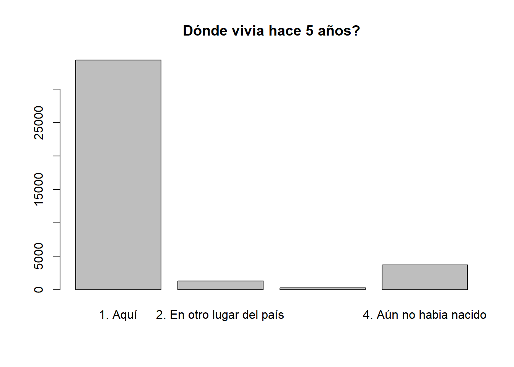
#GGPLOT
library(ggplot2)
ggplot(eh19p,aes(x=s03a_01a))+geom_bar()+ggtitle("Dónde vivia hace 5 años?")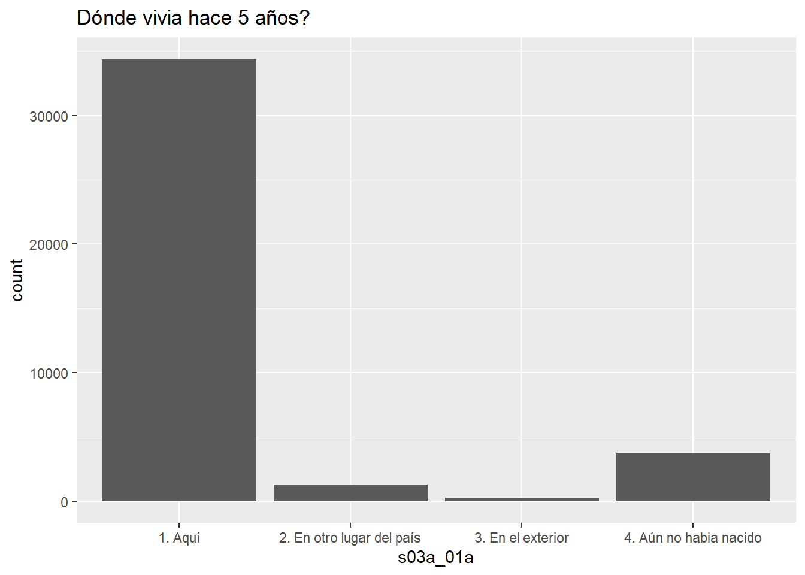
Para variables del tipo cuantitativas
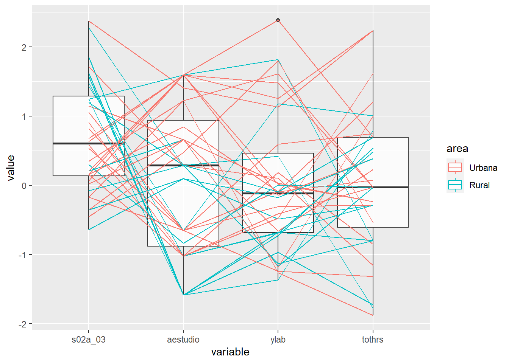
## null device
## 1## Warning: Removed 23816 rows containing non-finite values
## (stat_boxplot).## `stat_bin()` using `bins = 30`. Pick better value with
## `binwidth`.## Warning: Removed 23816 rows containing non-finite values (stat_bin).Si ahora queremos comparar usar ambas variables cuanti y cuali
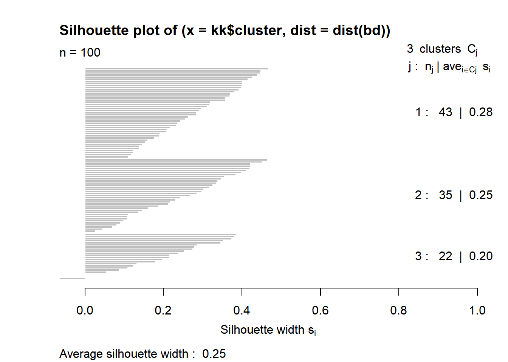
## Warning: Removed 23816 rows containing non-finite values
## (stat_boxplot).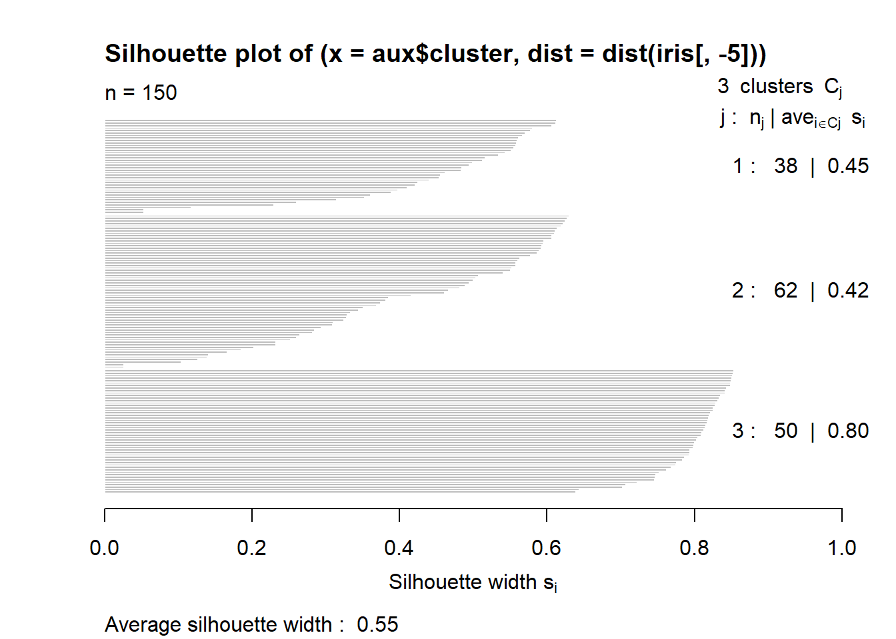
## Warning: Removed 23816 rows containing non-finite values
## (stat_ydensity).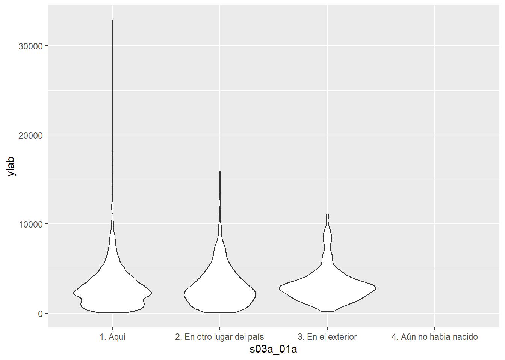
Usando ambas variables cuantitativas

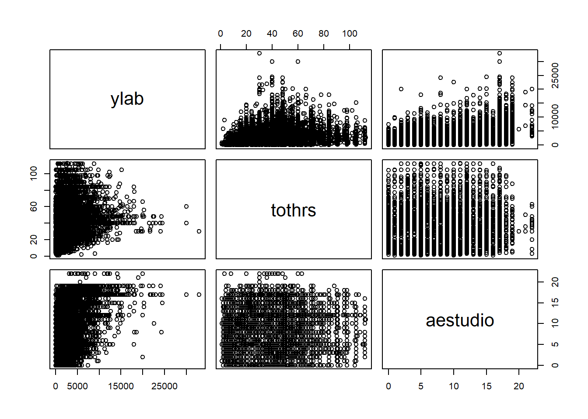
#pairs(eh18p[,c("ylab","tothrs","aestudio")]) similar al anterior
library(GGally)
ggpairs(eh19p,columns = c("ylab","tothrs","aestudio"))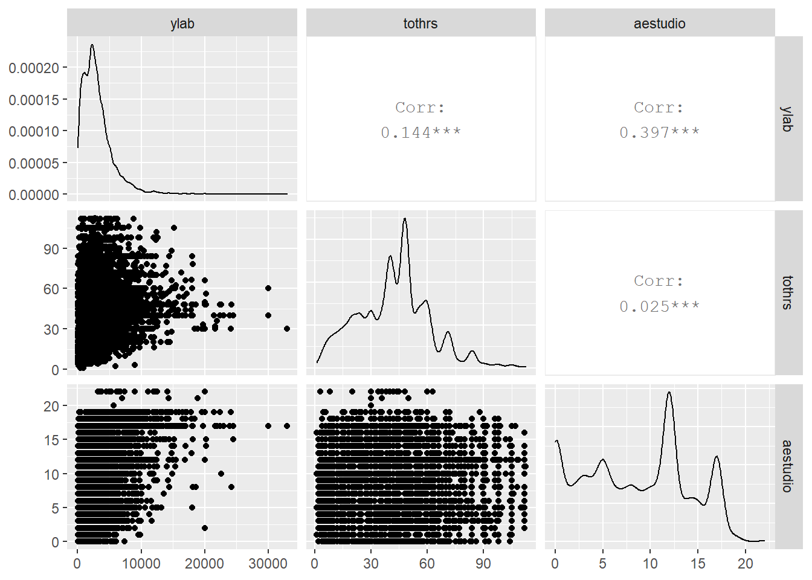
library(ggridges)
ggplot(eh19p %>% filter(s02a_03>=15 & ylab<10000), aes(x = ylab, y = s02a_02, fill = s02a_02)) +
geom_density_ridges() +
theme_ridges() +
theme(legend.position = "none")+
ggtitle("Ingreso laboral por sexo, personas de 15 años o más")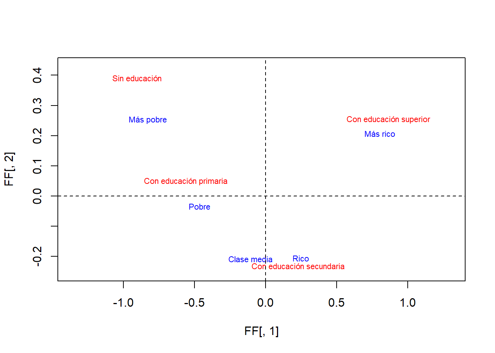
ggplot(eh19p %>% filter(s02a_03>=15 & ylab<10000), aes(x = ylab, y = depto, fill = depto)) +
geom_density_ridges() +
theme_ridges() +
theme(legend.position = "none")+
ggtitle("Ingreso laboral por departamento, personas de 15 años o más")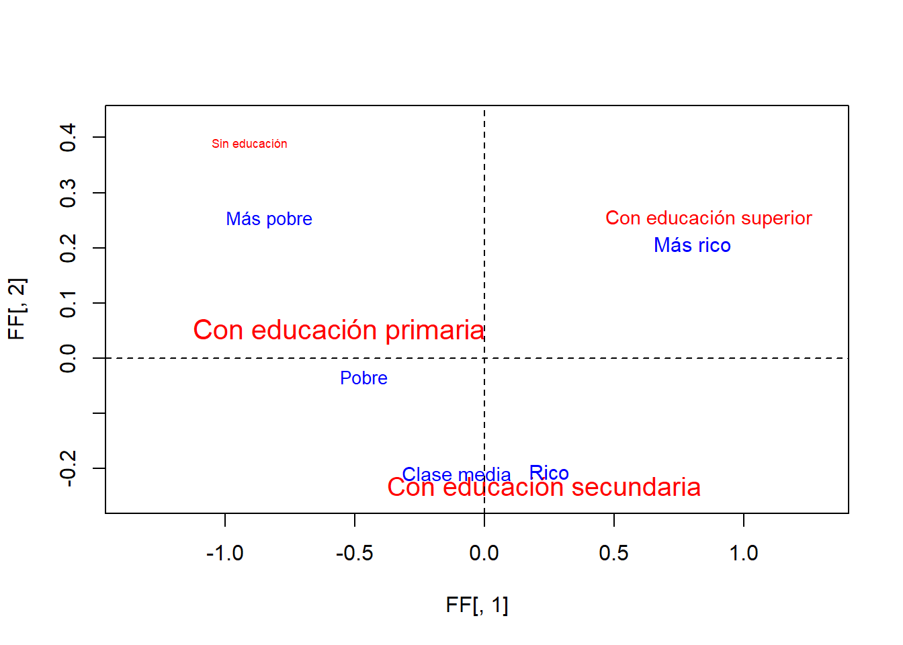
ggplot(eh19p %>% filter(s02a_03>=15 & ylab<10000), aes(x = ylab, y = area, fill = area)) +
geom_density_ridges() +
theme_ridges() +
theme(legend.position = "none")+
ggtitle("Ingreso laboral por rural, personas de 15 años o más")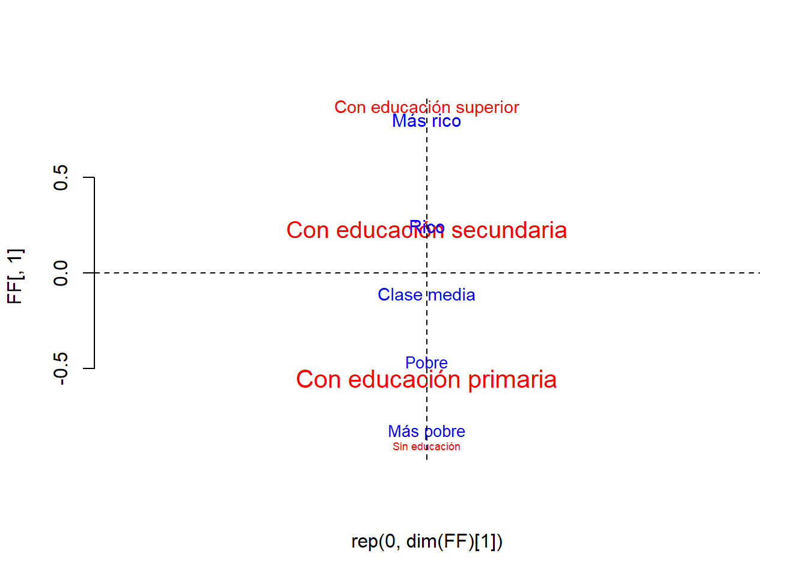
Ahora si combinamos variables cuanti y cuali con ggpairs.
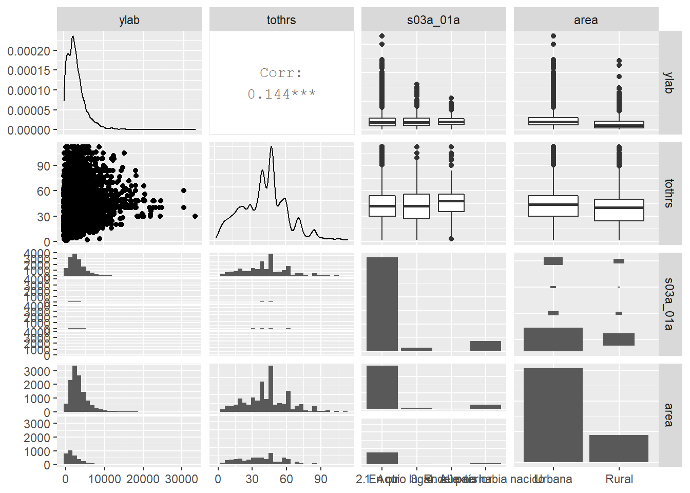
Alternativas Multivariantes,
#trabajando a partir de una muestra de 100 individuos
s<-sample(1:dim(eh19p)[1],100)
i<-match(c("s02a_03","aestudio","ylab","tothrs"),names(eh19p))
ggparcoord(eh19p[s,],columns = i,groupColumn = "area",boxplot=T)
##
## Attaching package: 'TeachingDemos'## The following objects are masked from 'package:Hmisc':
##
## cnvrt.coords, subplot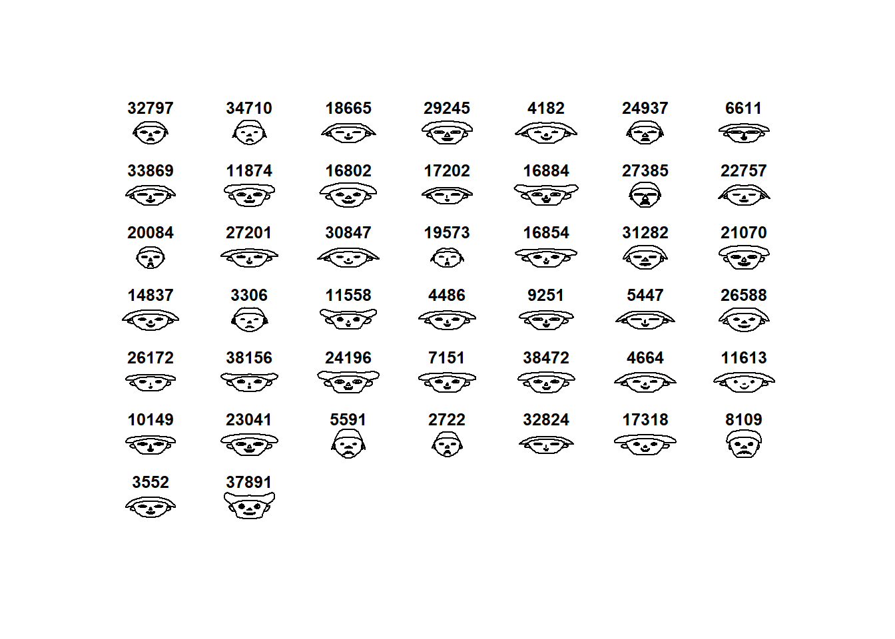
2.2 Componentes Principales
El método de Análisis de Componentes Principales se ocupa de explicar la estructura de varianza y covarianza de un grupo de variables a través de unas pocas combinaciones lineales de este grupo de variables. En general sus objetivos son (1) la reducción de los datos y (2) la interpretación.
Algebráicamente, los componentes principales son combinaciones lineales de \(p\) variables aleatorias \(X_1\), \(X_2\), , \(X_p\). Geométricamente, estas combinaciones lineales representan la selección de un nuevo sistema de coordenadas obtenido por rotación de del sistema original con \(X_1\), \(X_2\), , \(X_p\) como los ejes de coordenadas. Los nuevos ejes representan la dirección con la máxima variabilidad y provee una simple y más parsimoniosa descripción de la estructura de la covarianza.
Los componentes principales dependen únicamente de la matriz de covarianza \(\Sigma\) o la matriz de correlaciones \(\rho\) (Matriz estandarizada de \(\Sigma\)) de \(X_1\), \(X_2\), , \(X_p\). Su desarrollo no requiere de ningún supuesto de normalidad multivariada, sin embargo, componentes principales derivados de poblaciones normales multivariantes tienen un gran uso en la interpretación en términos de elipsoide de densidad constante.
Sea la matriz \(\mathbf{X}\) compuesta de \(p\) vectores aleatorios \(\mathbf{X}=[X_1, X_2, \ldots, X_p ]\) que tiene la matriz de covarianza \(\Sigma\) con valores propios \(\lambda_1 \geq \lambda_2 \geq \ldots \geq \lambda_p \geq 0\).
Considere la combinación lineal:
\[\begin{equation} \begin{array}{rrr} Y_1 = & a_1^{'} \mathbf{X} = & a_{11} X_1 + a_{12} X_2 + \ldots a_{1p} X_p \\ Y_2 = & a_2^{'} \mathbf{X} = & a_{21} X_1 + a_{22} X_2 + \ldots a_{2p} X_p\\ \vdots = & \vdots & \vdots \\ Y_p = & a_p^{'} \mathbf{X} = & a_{p1} X_1 + a_{p2} X_2 + \ldots a_{pp} X_p\\ \end{array} \label{cp1} \end{equation}\]
Equivalente a:
\[\begin{equation} \mathbf{Y}= \left[ \begin{array}{c} Y_1\\ Y_2\\ \vdots\\ Y_p\\ \end{array} \right] = \left[ \begin{array}{cccc} a_{11} & a_{12} & \ldots & a_{1p} \\ a_{21} & a_{22} & \ldots & a_{2p} \\ \vdots & \vdots & \ddots & \vdots \\ a_{21} & a_{p2} & \ldots & a_{pp} \\ \end{array} \right] \left[ \begin{array}{c} X_1\\ X_2\\ \vdots\\ X_p\\ \end{array} \right] = \mathbf{A X} \label{cp2} \end{equation}\]
La combinación lineal \(\mathbf{Y}=\mathbf{AX}\) tiene:
\[\begin{equation} \mu_y=E(\mathbf{Y})=E(\mathbf{AX})=A \mu_x \label{cp3} \end{equation}\]
\[\begin{equation} \Sigma_y=Cov(\mathbf{Y})=Cov(\mathbf{AX})=A \Sigma A^{'} \label{cp4} \end{equation}\]
En base a , se obtiene:
\[\begin{equation} Var(Y_i)=a_i^{'} \Sigma a_i \quad i=1, 2, \ldots, p \label{cp5} \end{equation}\]
\[\begin{equation} Cov(Y_i,Y_k)=a_i^{'} \Sigma a_k \quad i,k=1, 2, \ldots, p \label{cp6} \end{equation}\]
Los componentes principales son combinaciones lineales incorrelacionadas, tal que es lo más grande posible.
El primer componente principal es la combinación lineal con máxima varianza. Entonces se debe maximizar \(Var(Y_1)=a_1^{'} \Sigma a_1\). Es claro que \(Var(Y_1)\) puede ser incrementada multiplicando a \(a_1\) por alguna constante. Para eliminar esta indeterminación, es conveniente restringir los coeficientes del vector. Por lo tanto se define.
\[ \begin{array}{rcl} \text{Primer componente principal} & = & \text{Combinacion lineal} \quad a_1^{'}X \quad \text{que maximiza} \\ & & Var(a_1^{'}X) \quad \text{sujeto a} \quad a_1^{'} a_1=1\\ \text{Segundo componente principal} & = & \text{Combinacion lineal} \quad a_2^{'}X \quad \text{que maximiza} \\ & & Var(a_2^{'}X) \quad \text{sujeto a} \quad a_2^{'} a_2=1 \quad y \\ & & Cov(a_1^{'}X,a_2^{'}X)=0 \end{array} \]
Para el \(i-esimo\) paso:
\[ \begin{array}{rcl} i-esimo \text{ componente principal} & = & \text{Combinacion lineal} \quad a_i^{'}X \quad \text{que maximiza} \\ & & Var(a_i^{'}X) \quad \text{sujeto a} \quad a_i^{'} a_i=1 \quad y \\ & & Cov(a_i^{'}X,a_k^{'}X)=0 \quad para \quad k<i \end{array} \]
\[\Sigma_{(pxp)}= A_{(p*p)} \Lambda_{(p*p)} A^t_{(p*p)} \] El aspecto central de componentes principales es trabajar con menos variables, sea \(m<p\), el método de componentes busca a partir de \(m\), los siguiente:
\[\Sigma_{(pxp)} \approx A_{(p*m)} \Lambda_{(m*m)} A^t_{(m*p)}\]
Los pasos sugeridos para iniciar el análisis de componentes principales son:
- Identificar las variables de interés dentro de la matriz de datos, si las variables tienen las mismas escalas se recomienda emplear la matriz de covarianza, si las escalas son diferentes, se recomienda trabajar con la matriz de correlaciones.
- Obtener los componentes principales, los eigen valores y la matriz de eigen vectores
- (Opcional) Eliminar las variables redundantes,
- se sugiere identificar las variables del conjunto de datos correlacionadas con los últimos componentes.
- Calcular nuevamente los componentes principales excluyendo las variables identificadas en el paso previo
- Elegir el número de componentes a retener \(m\) (scree plot, tamaño de los eigen valores, etc)
- Analizar los resultados y usar los componentes
Usos de componentes principales.
- Detección de valores atípicos
- Identificación de posibles factores
- Los primeros componentes se pueden usar como indicadores
- Eliminan la multicolinealidad de un modelo de regresión múltiple
load(url("https://github.com/AlvaroLimber/EST-384/blob/master/data/oct20.RData?raw=true"))
names(computo)[18]<-"MAS"
bd<-computo %>% filter(País=="Bolivia" & Elección=="Presidente y Vicepresidente")
bdmun<-bd %>% group_by(Departamento,Provincia,Municipio) %>% summarise_at(vars(Inscritos:Nulos),sum)
bdmun[,5:13]<-prop.table(as.matrix(bdmun[,5:13]),1)*100
cov(bdmun[,5:13])## CC FPV MTS UCS
## CC 229.38080031 -2.09801049 -16.59325886 -0.390870255
## FPV -2.09801049 0.18638642 0.50970626 0.092315798
## MTS -16.59325886 0.50970626 8.23441135 0.234687473
## UCS -0.39087026 0.09231580 0.23468747 0.196770971
## MAS -249.50296353 1.41367645 10.40910089 -0.402938082
## 21F 35.49784986 -0.57462867 -5.41710138 -0.182375753
## PDC -1.86605304 0.49553362 3.48928083 0.409571826
## MNR 5.64850407 -0.05669375 -0.88593478 -0.006117697
## PAN-BOL -0.07599806 0.03171437 0.01910823 0.048955719
## MAS 21F PDC MNR
## CC -249.5029635 35.4978499 -1.8660530 5.648504075
## FPV 1.4136764 -0.5746287 0.4955336 -0.056693755
## MTS 10.4091009 -5.4171014 3.4892808 -0.885934778
## UCS -0.4029381 -0.1823758 0.4095718 -0.006117697
## MAS 333.1052479 -69.5776991 -13.4371126 -11.567664567
## 21F -69.5776991 42.7813484 -8.2966775 6.115120503
## PDC -13.4371126 -8.2966775 20.2437456 -1.658049785
## MNR -11.5676646 6.1151205 -1.6580498 2.465499159
## PAN-BOL -0.4396474 -0.3458364 0.6197611 -0.054663155
## PAN-BOL
## CC -0.07599806
## FPV 0.03171437
## MTS 0.01910823
## UCS 0.04895572
## MAS -0.43964740
## 21F -0.34583640
## PDC 0.61976111
## MNR -0.05466316
## PAN-BOL 0.19660559## corrplot 0.84 loaded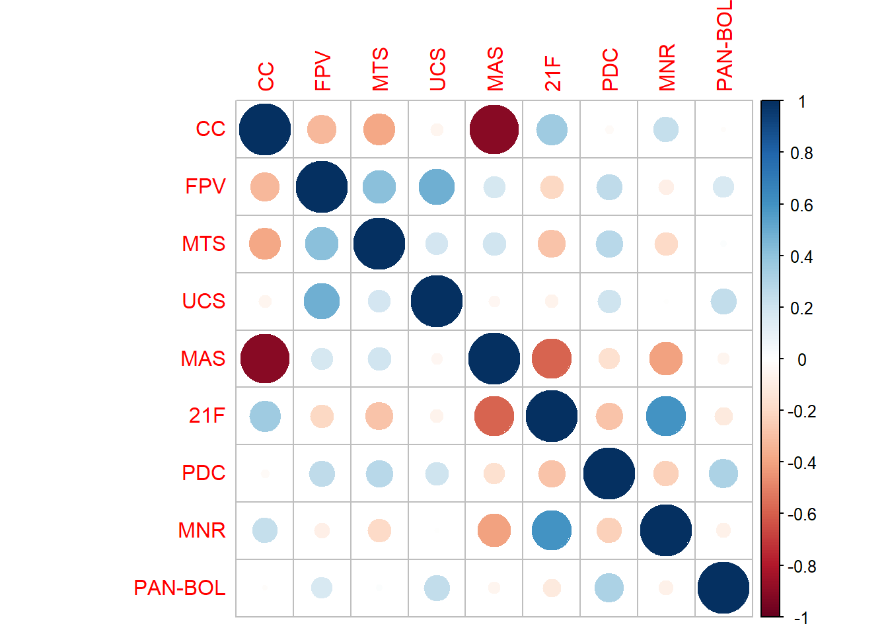
## [,1] [,2] [,3] [,4] [,5]
## [1,] 1.00000000 -0.32086474 -0.3818008 -0.058179981 -0.90262309
## [2,] -0.32086474 1.00000000 0.4114306 0.482045890 0.17941228
## [3,] -0.38180084 0.41143057 1.0000000 0.184371214 0.19874957
## [4,] -0.05817998 0.48204589 0.1843712 1.000000000 -0.04976993
## [5,] -0.90262309 0.17941228 0.1987496 -0.049769934 1.00000000
## [6,] 0.35834082 -0.20349462 -0.2886180 -0.062857825 -0.58284368
## [7,] -0.02738420 0.25510593 0.2702553 0.205212648 -0.16363258
## [8,] 0.23752126 -0.08363261 -0.1966224 -0.008783245 -0.40364774
## [9,] -0.01131686 0.16567275 0.0150178 0.248900051 -0.05432701
## [,6] [,7] [,8] [,9]
## [1,] 0.35834082 -0.0273842 0.237521258 -0.01131686
## [2,] -0.20349462 0.2551059 -0.083632612 0.16567275
## [3,] -0.28861802 0.2702553 -0.196622422 0.01501780
## [4,] -0.06285783 0.2052126 -0.008783245 0.24890005
## [5,] -0.58284368 -0.1636326 -0.403647735 -0.05432701
## [6,] 1.00000000 -0.2819237 0.595422656 -0.11924647
## [7,] -0.28192367 1.0000000 -0.234692765 0.31065686
## [8,] 0.59542266 -0.2346928 1.000000000 -0.07851350
## [9,] -0.11924647 0.3106569 -0.078513499 1.00000000#round(A %*% t(A),2)
#componentes principales
#componentes a retener
barplot(eigen(sigma)$values)
abline(h=1,col="red")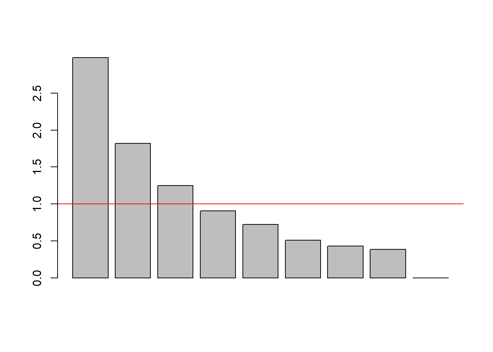
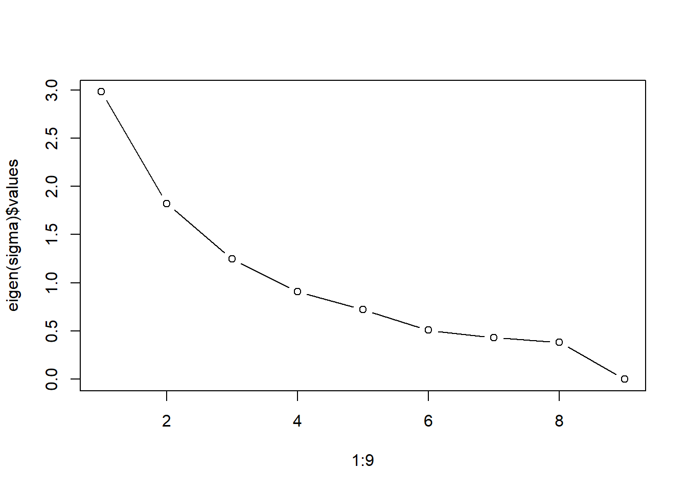
## [1] 33.12 53.36 67.22 77.29 85.31 90.96 95.75 100.01 100.01sigma3<-A[,1:3] %*% Lambda[1:3,1:3] %*% t(A[,1:3])
sigma2<-A[,1:2] %*% Lambda[1:2,1:2] %*% t(A[,1:2])
par(mfrow=c(1,3))
colnames(sigma)<-1:9
rownames(sigma)<-1:9
corrplot(sigma)
corrplot(sigma3)
corrplot(sigma2)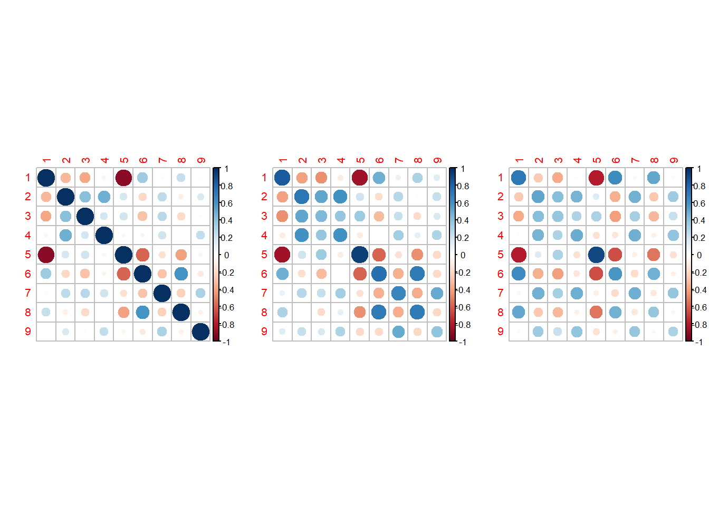
## null device
## 1## [,1]
## [1,] -5.3879940
## [2,] 9.8581564
## [3,] -1.5069018
## [4,] 9.5957026
## [5,] -6.0727426
## [6,] 10.2036950
## [7,] -4.5777091
## [8,] 7.2265148
## [9,] 9.1327336
## [10,] 3.0186036
## [11,] 4.9851015
## [12,] 11.6909217
## [13,] -12.6842356
## [14,] -13.6968262
## [15,] -16.2162176
## [16,] 12.3414047
## [17,] 14.4096106
## [18,] -14.8981304
## [19,] 13.3536094
## [20,] -28.0012634
## [21,] -27.4405125
## [22,] -21.3330370
## [23,] -10.6524174
## [24,] -3.0214342
## [25,] -15.8435323
## [26,] -12.3914245
## [27,] -4.3952446
## [28,] -12.4443213
## [29,] -29.9990727
## [30,] -35.4245622
## [31,] -29.9140946
## [32,] -32.5619743
## [33,] 13.4092851
## [34,] -18.2720500
## [35,] -27.2945428
## [36,] -29.5427858
## [37,] -27.2671925
## [38,] -20.3482866
## [39,] -32.3094742
## [40,] -14.7264115
## [41,] -31.2043390
## [42,] -31.8980892
## [43,] -30.2074258
## [44,] -29.3667784
## [45,] -29.3379440
## [46,] -29.4721459
## [47,] -31.7284278
## [48,] -29.0107244
## [49,] -22.5250197
## [50,] -39.8307602
## [51,] -41.0969095
## [52,] -41.6207036
## [53,] -35.6189208
## [54,] -38.8706782
## [55,] -40.3937045
## [56,] -36.1674086
## [57,] -27.6935240
## [58,] -32.6865200
## [59,] -13.4113036
## [60,] -24.4487864
## [61,] -32.6298672
## [62,] -39.4663503
## [63,] -36.3782592
## [64,] -39.9744544
## [65,] -39.9810357
## [66,] -39.4998171
## [67,] -39.8329196
## [68,] -38.5728304
## [69,] 1.5685691
## [70,] -33.8526575
## [71,] -7.4235962
## [72,] -40.8601326
## [73,] -36.1002928
## [74,] -32.6412171
## [75,] -37.9093953
## [76,] -27.7756703
## [77,] -25.1065115
## [78,] -35.6165447
## [79,] -23.8411157
## [80,] -40.0180967
## [81,] -30.3381198
## [82,] -42.4024884
## [83,] -41.2632414
## [84,] -18.7457137
## [85,] -25.5523195
## [86,] -23.7548518
## [87,] -32.3757839
## [88,] -31.9818037
## [89,] 2.2938813
## [90,] -6.1658502
## [91,] -26.1580147
## [92,] -3.6390996
## [93,] -15.2341034
## [94,] -41.4407766
## [95,] -37.2122458
## [96,] -38.4407716
## [97,] -7.0568021
## [98,] -11.0126507
## [99,] -37.3246419
## [100,] -36.2109035
## [101,] -23.9223557
## [102,] -34.9009966
## [103,] -29.8146639
## [104,] -35.3174108
## [105,] -34.0978395
## [106,] -34.8825805
## [107,] -35.1971706
## [108,] -35.1678037
## [109,] -35.5789758
## [110,] -35.0373872
## [111,] -32.4570900
## [112,] -32.4419557
## [113,] -33.4898312
## [114,] -26.8277117
## [115,] -10.1047042
## [116,] -24.9468945
## [117,] -38.1303050
## [118,] -37.6057514
## [119,] -38.4853227
## [120,] -37.0010204
## [121,] -40.2290550
## [122,] -17.7265777
## [123,] -37.2184939
## [124,] -37.9420055
## [125,] -31.6877403
## [126,] -36.2836734
## [127,] -34.4431782
## [128,] -25.8223735
## [129,] -24.2148767
## [130,] -29.8715610
## [131,] -37.3810976
## [132,] -35.7426051
## [133,] -26.5910644
## [134,] -34.3505089
## [135,] -32.6145043
## [136,] -18.2360380
## [137,] -18.2432574
## [138,] -30.9911014
## [139,] -29.1385693
## [140,] -25.4349664
## [141,] -24.1915053
## [142,] -19.0204117
## [143,] -31.7311148
## [144,] -38.5147148
## [145,] -37.0846187
## [146,] -37.8787157
## [147,] -37.4807212
## [148,] -32.8741260
## [149,] -34.9910638
## [150,] -33.8188993
## [151,] -37.3440974
## [152,] -31.1069810
## [153,] -25.8212289
## [154,] -26.2395090
## [155,] -33.4967587
## [156,] -33.3820752
## [157,] -35.3449648
## [158,] -29.7917915
## [159,] -17.5489357
## [160,] -30.4101526
## [161,] 3.0564052
## [162,] -39.1509579
## [163,] -2.1069118
## [164,] -12.4523420
## [165,] -22.6541782
## [166,] -32.3124013
## [167,] -31.4982931
## [168,] -27.1146780
## [169,] -33.5231794
## [170,] -35.0088178
## [171,] -36.6951659
## [172,] -35.5348259
## [173,] -15.4604170
## [174,] -36.2120410
## [175,] -34.3170142
## [176,] -36.5857828
## [177,] -34.0517266
## [178,] -37.6546898
## [179,] 10.1730707
## [180,] -7.4603047
## [181,] -5.4264362
## [182,] -29.6837047
## [183,] -16.0444123
## [184,] -23.1385472
## [185,] -30.3241663
## [186,] -36.7275467
## [187,] -28.3135517
## [188,] -28.6365149
## [189,] -32.2535510
## [190,] -0.9116476
## [191,] -30.7276427
## [192,] -36.0823173
## [193,] -33.0059806
## [194,] 4.9269802
## [195,] -0.8641924
## [196,] -0.4758113
## [197,] -11.1225902
## [198,] 0.9303554
## [199,] -0.1338435
## [200,] -12.1972536
## [201,] 9.0320757
## [202,] -30.9954762
## [203,] -21.3172641
## [204,] -19.0047628
## [205,] -12.8761910
## [206,] -24.4031095
## [207,] -24.6021190
## [208,] -34.1423876
## [209,] -1.2988197
## [210,] 8.3946994
## [211,] -32.1263476
## [212,] -30.0990131
## [213,] -38.4424639
## [214,] -27.1992587
## [215,] -26.6730862
## [216,] -36.4671882
## [217,] -32.6905601
## [218,] -28.5862038
## [219,] 4.4185207
## [220,] -15.2504511
## [221,] -11.1634786
## [222,] 0.7305325
## [223,] -4.3561980
## [224,] -8.3785171
## [225,] -10.5448133
## [226,] -3.2154940
## [227,] -7.8953066
## [228,] -10.3254753
## [229,] 7.8938375
## [230,] -8.6329288
## [231,] 5.0356261
## [232,] 3.2351315
## [233,] -6.6563079
## [234,] -37.2416372
## [235,] -37.5239707
## [236,] 9.9836077
## [237,] -21.7393729
## [238,] -7.1246449
## [239,] -35.9819133
## [240,] -36.7826681
## [241,] -34.6955397
## [242,] -30.9828833
## [243,] -35.7856729
## [244,] -32.9800349
## [245,] -29.6737813
## [246,] -19.9581488
## [247,] -29.7882623
## [248,] -26.9243743
## [249,] -27.8424468
## [250,] -27.3234881
## [251,] -37.2245672
## [252,] -39.5340804
## [253,] -21.6272997
## [254,] -35.6306536
## [255,] -25.9575731
## [256,] -23.5190648
## [257,] -29.8975877
## [258,] -30.6559925
## [259,] -15.5745296
## [260,] -16.6778772
## [261,] -31.6594618
## [262,] -34.7818243
## [263,] -12.4898857
## [264,] -17.8690953
## [265,] -24.3279529
## [266,] -15.5840870
## [267,] -38.1694016
## [268,] -37.4327963
## [269,] -26.3399328
## [270,] 20.2781277
## [271,] -30.9265705
## [272,] -29.5600596
## [273,] -8.2777515
## [274,] 4.5896583
## [275,] -10.2339725
## [276,] 1.3836692
## [277,] 21.4925562
## [278,] 14.6741470
## [279,] -0.7844150
## [280,] 2.8319042
## [281,] 17.2455682
## [282,] 13.6897997
## [283,] -1.0772254
## [284,] -6.4769526
## [285,] 12.7192358
## [286,] -12.4088390
## [287,] -2.7848645
## [288,] -22.0559062
## [289,] -12.9869448
## [290,] -7.7673430
## [291,] -5.8168102
## [292,] 5.8302470
## [293,] 7.3227940
## [294,] -0.2483735
## [295,] 4.5372606
## [296,] 15.0610187
## [297,] -0.8787057
## [298,] -15.7075010
## [299,] 1.1971226
## [300,] -3.4708909
## [301,] -5.8044182
## [302,] -7.9239877
## [303,] -24.8868601
## [304,] -13.8763433
## [305,] -15.1706755
## [306,] -8.9847194
## [307,] -20.9846343
## [308,] -10.2188924
## [309,] 7.3083232
## [310,] -27.3347937
## [311,] 4.1131126
## [312,] -16.6478408
## [313,] -3.2389921
## [314,] 3.7037605
## [315,] 3.9028753
## [316,] -15.5961318
## [317,] 17.2832730
## [318,] 25.8263118
## [319,] -7.3465568
## [320,] 9.4576133
## [321,] 20.4977083
## [322,] -2.8713831
## [323,] 5.6009689
## [324,] 14.8737372
## [325,] 15.0745800
## [326,] -2.3079776
## [327,] 12.3451573
## [328,] 13.3613824
## [329,] 1.1002287
## [330,] -5.3290524
## [331,] -19.6727311
## [332,] -11.0124148
## [333,] -33.5659735
## [334,] 8.1077561
## [335,] -10.1705556
## [336,] 1.5149081
## [337,] -5.5069444
## [338,] -21.1801154
## [339,] -2.7832261
## [340,] -6.5915367#1. Seleccione una base de datos de interés del repositorio
load(url("https://github.com/AlvaroLimber/EST-384/blob/master/data/oct20.RData?raw=true"))
#2. Seleccione las variables para el PCA (Según la motivación)
vv<-c(14:22,24,25)
#2A TRANFORMAR
vval<-apply(computo[,vv],1,sum)
aux<-computo[,vv]/vval
#2B LIMPIEZA
#3. Calcule el PCA
aux1<-na.omit(aux)
cp1<-eigen(cov(aux1))
cp2<-eigen(cor(aux1))
#4. Identifique el número de CPs que explican hasta el 90% de la varianza
cumsum(cp1$values)/sum(cp1$values) ## [1] 0.6437488 0.8650934 0.9435882 0.9722772 0.9839750 0.9903314
## [7] 0.9952079 0.9977119 0.9991579 1.0000000 1.0000000## [1] 0.2060107 0.3791103 0.4915437 0.5920446 0.6774866 0.7601857
## [7] 0.8319256 0.8991550 0.9562490 1.0000000 1.0000000#5. Identifique las variables correlacionadas con la cantidad de
#componentes fuera del 90% del paso anterior
cp11cov<-as.matrix(aux1)%*%cp1$vectors[,11]
cp11cor<-as.matrix(aux1)%*%cp2$vectors[,11]
cor(cbind(aux1,cp11cov,cp11cor))[1:11,12:13]## cp11cov cp11cor
## CC 0.53979440 -0.30842297
## FPV -0.55376059 0.21633850
## MTS 0.13333915 0.40515623
## UCS -0.34677314 0.35428285
## MAS - IPSP -0.21854796 -0.41971569
## 21F -0.38433159 0.53263368
## PDC -0.12174043 -0.01216537
## MNR -0.21628303 0.41542663
## PAN-BOL 0.11710134 0.09577694
## Blancos -0.07666553 0.50453525
## Nulos -0.11039942 0.18712933## [1] 0.6443329 0.8658697 0.9444240 0.9730984 0.9847943 0.9911498
## [7] 0.9960295 0.9984949 0.9999206 1.0000000cp10cov<-as.matrix(aux1[,-2])%*%cp11$vectors[,10]
#6. Calcule nuevamente el componente principal eliminando las variables rebundantes
#7. Determine la cantidad de componentes principales a retener
cp1cov<-as.matrix(aux1[,-2])%*%cp11$vectors[,1]
cp2cov<-as.matrix(aux1[,-2])%*%cp11$vectors[,2]
plot(cp1cov,cp2cov)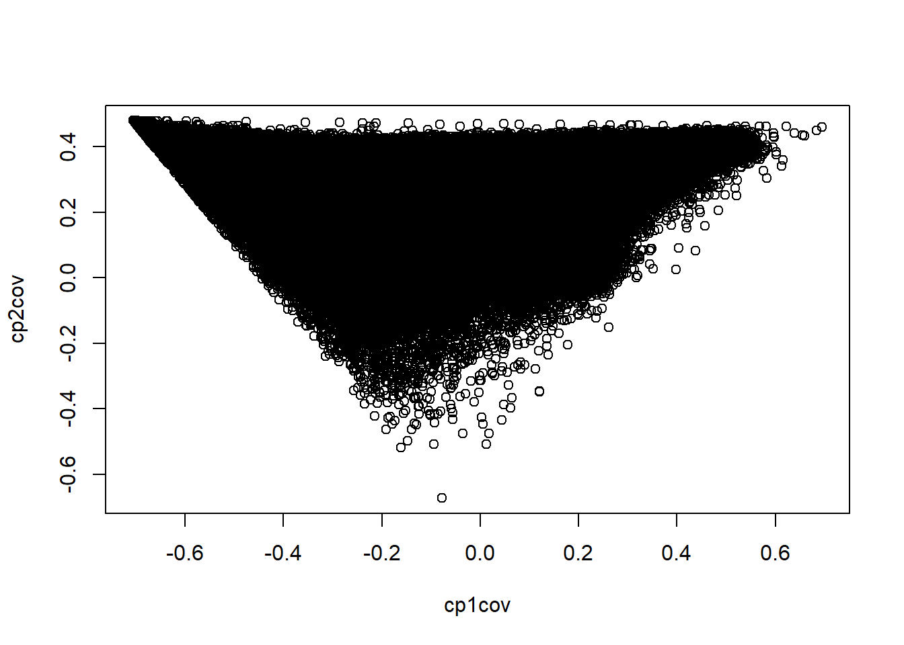
## cp1cov cp2cov
## CC 0.92113465 0.35759774
## FPV -0.08074887 -0.10802564
## MTS -0.16786500 -0.30855895
## UCS 0.14139049 -0.22216012
## MAS - IPSP -0.92337643 0.36777758
## 21F 0.32455320 -0.47209833
## PDC -0.09883288 0.43937850
## MNR 0.19561852 -0.25724983
## PAN-BOL 0.04776390 -0.01901819
## Blancos -0.17330606 -0.88168972
## Nulos -0.08874645 0.06391096bd<-cbind(aux1,cp1cov,cp2cov)
names(bd)[5]<-"MAS"
#9. Modele un modelo lineal empleando los CPs retenidos.
summary(lm(MAS~cp1cov,data=bd))##
## Call:
## lm(formula = MAS ~ cp1cov, data = bd)
##
## Residuals:
## Min 1Q Median 3Q Max
## -0.39544 -0.05881 0.01417 0.06187 0.16168
##
## Coefficients:
## Estimate Std. Error t value Pr(>|t|)
## (Intercept) 0.3407735 0.0003141 1085.0 <2e-16 ***
## cp1cov -0.7053686 0.0011240 -627.5 <2e-16 ***
## ---
## Signif. codes: 0 '***' 0.001 '**' 0.01 '*' 0.05 '.' 0.1 ' ' 1
##
## Residual standard error: 0.07868 on 68069 degrees of freedom
## Multiple R-squared: 0.8526, Adjusted R-squared: 0.8526
## F-statistic: 3.938e+05 on 1 and 68069 DF, p-value: < 2.2e-162.3 Análisis de correspondencia
El análisis de correspondencia esta orientado a encontrar relaciones entre las categorías de variables cualitativas.
Esta técnica es un método visual que va más allá del test de independencia Chi-cuadrado.
load(url("https://github.com/AlvaroLimber/EST-384/raw/master/data/endsa.RData"))
#tarea 10 min, explorar la base de datos
library(Hmisc)
describe(endsa)
names(endsa)
aux<-attributes(endsa)
names(endsa)
#aeXX
aux$var.labels[7:15]
#nupXX
aux$var.labels[23:26]
#antXX
aux$var.labels[16:20]
#vfXX
aux$var.labels[50:59]
table(endsa$year,endsa$sexo)
table(endsa$edad,endsa$sexo)
library(dplyr)
N<-endsa %>% filter(year==2008) %>% select(ae01,ae08) %>% table()
N<-t1[1:4,]
chisq.test(N)
N
n<-sum(N)
P<-N/n
addmargins(N)Para resumir la teoría, primero divida la matriz de datos \(I × J\), denotada por \(N\), por su gran total \(n\) para obtener la llamada matriz de correspondencia \(P = N / n\). Deje que los totales marginales de fila y columna de \(P\) sean los vectores \(r\) y \(c\) respectivamente, es decir, los vectores de masas de fila y columna, y \(Dr\) y \(Dc\) sean las matrices diagonales de estas matrices. El algoritmo computacional para obtener coordenadas de los perfiles de fila y columna con respecto a los ejes principales, usando el SVD, es el siguiente:
- Calcular la matriz de residuos estadarizados: \(S=D_r^{-1/2}(P-rc^t)D_c^{-1/2}\)
- Calcular la descomposición SVD de \(S\): \(S=UD_{\alpha}V^t\), donde \(U^T U=V^T V=I\)
- Coordenadas principales de filas: \(F=D_r^{-1/2} U D_{\alpha}\)
- Coordenadas principales de columnas: \(G=D_c^{-1/2} V D_{\alpha}\)
- Coordenadas estándar de filas: \(X=D_r^{-1/2} U\)
- Coordenadas estándar de columnas: \(Y=D_c^{-1/2} V\)
- Calcular la Inercia: \[\phi^2=\sum_i^I\sum_j^J{\frac{(p_{ij}-r_i c_j)^2}{r_i c_j}}\]
- Graficar las coordenadas de F y G según la la inercia contenida en la matriz \(D_{\alpha}\)
En R, existe la libreria ca que permite acceder a las coordenadas del método de correspondencia.
#ejemplo CA
#install.packages("ca")
library(dplyr)
library(ca)
data("smoke")
model<-ca(smoke)
plot(model)
names(model)
summary(model)
#ejemplo ENDSA
load(url("https://github.com/AlvaroLimber/EST-384/raw/master/data/endsa.RData"))
ll<-attributes(endsa)
ll$var.labels
t1<-endsa %>% filter(year==2008) %>% select(7,14) %>% table()
t1<-t1[1:4,]
#test chi2
chisq.test(t1)
model<-ca(t1)
model
plot(model)
#programando el ca
lcol<-colnames(t1)
lrow<-rownames(t1)
P<-prop.table(t1)
r<-margin.table(P,1)
c<-margin.table(P,2)
Dr<-diag(r)
Dc<-diag(c)
##Paso 1
P-r%*%t(c)
#error en las matriz diagonales
Dr^(-0.5)%*%(P-r%*%t(c))%*% Dc^(-0.5)
# corrigiendo el problema
S<-diag(r^(-0.5))%*%(P-r%*%t(c))%*% diag(c^(-0.5))
# 2 descomposición SVD
svd(S)
U<-svd(S)$u
V<-svd(S)$v
Da<-diag(svd(S)$d)
#verificando las propiedades
U %*% t(U)
t(V) %*% V
U %*% Da %*% t(V)
S
# 3 Coordenadas principales filas
FF<- diag(r^(-0.5)) %*% U %*% Da
# 4 Coordenadas principales columnas
G<- diag(c^(-0.5)) %*% V %*% Da
# 5 Coordenadas estandar filas
X<- diag(r^(-0.5)) %*% U
# 6 Coordenadas estandar columnas
Y<- diag(c^(-0.5)) %*% V
# 7 inercia
sum(((P-r%*%t(c))**2)/(r%*%t(c)))
#graficando
xmin<-min(c(FF[,1],G[,1]))
xmax<-max(c(FF[,1],G[,1]))
ymin<-min(c(FF[,2],G[,2]))
ymax<-max(c(FF[,2],G[,2]))
plot(FF[,1],FF[,2],col="red",xlim=c(xmin,xmax)*1.5,ylim=c(ymin,ymax)*1.1)
points(G[,1],G[,2],col="blue")
abline(h=0,v=0,lty=2)
#incluyendo el texto
plot(FF[,1],FF[,2],xlim=c(xmin,xmax)*1.5,ylim=c(ymin,ymax)*1.1,type = "n")
text(FF[,1],FF[,2],labels = lrow,col="red",cex=0.7)
text(G[,1],G[,2],labels = lcol,col="blue",cex=0.7)
abline(h=0,v=0,lty=2)
#incluyendo mas información
plot(FF[,1],FF[,2],xlim=c(xmin,xmax)*1.5,ylim=c(ymin,ymax)*1.1,type = "n")
text(FF[,1],FF[,2],labels = lrow,col="red",cex=0.5+r*2)
text(G[,1],G[,2],labels = lcol,col="blue",cex=0.5+c*2)
abline(h=0,v=0,lty=2)
#viendo solo una dimensión
plot(rep(0,dim(FF)[1]),FF[,1],type = "n", axes = F)
axis(2)
text(rep(0,dim(FF)[1]),FF[,1],labels = lrow,col="red",cex=0.5+r*2)
text(rep(0,dim(G)[1]),G[,1],labels = lcol,col="blue",cex=0.5+c*2)
abline(h=0,v=0,lty=2)